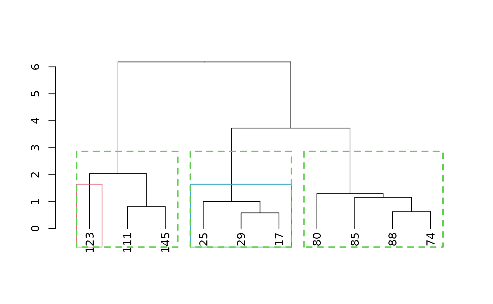
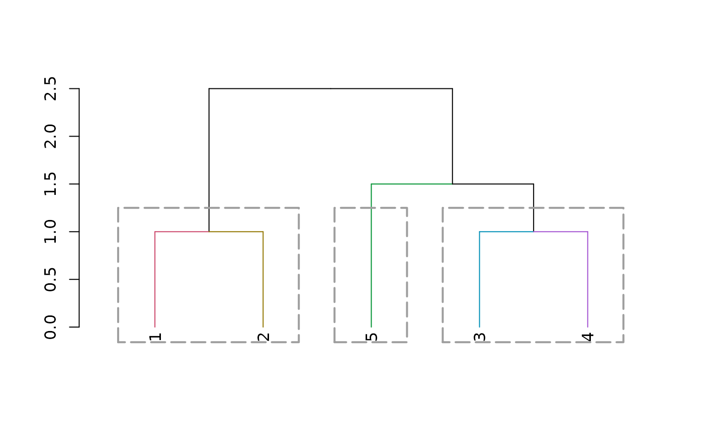

Draws rectangles around the branches of a dendrogram highlighting the corresponding clusters. First the dendrogram is cut at a certain level, then a rectangle is drawn around selected branches.
rect.dendrogram(
tree,
k = NULL,
which = NULL,
x = NULL,
h = NULL,
border = 2,
cluster = NULL,
horiz = FALSE,
density = NULL,
angle = 45,
text = NULL,
text_cex = 1,
text_col = 1,
xpd = TRUE,
lower_rect,
upper_rect = 0,
prop_k_height = 0.5,
stop_if_out = FALSE,
...
)This function is based on rect.hclust, with slight modifications to have it work with a dendrogram, as well as a few added features (e.g: ... to rect, and horiz)
The idea of adding text and shading lines under the clusters comes from skullkey from here: https://stackoverflow.com/questions/4720307/change-dendrogram-leaves
a dendrogram object.
Scalar. Cut the dendrogram such that exactly k clusters (if possible) are produced.
A vector selecting the clusters around which a rectangle should be drawn. which selects clusters by number (from left to right in the tree), Default is which = 1:k.
A vector selecting the clusters around which a rectangle should be drawn. x selects clusters containing the respective horizontal coordinates.
Scalar. Cut the dendrogram by cutting at height h. (k overrides h)
Vector with border colors for the rectangles.
Optional vector with cluster memberships as returned by cutree(dend_obj, k = k), can be specified for efficiency if already computed.
logical (FALSE), indicating if the rectangles should be drawn horizontally or not (for when using plot(dend, horiz = TRUE) ) .
Passed to rect: the density of shading lines, in lines per inch. The default value of NULL means that no shading lines are drawn. A zero value of density means no shading lines whereas negative values (and NA) suppress shading (and so allow color filling). If border is a vector of colors, the color of density will default to 1.
Passed to rect: angle (in degrees) of the shading lines. (default is 45)
a character vector of labels to plot underneath the clusters. When NULL (default), no text is displayed.
a numeric (scalar) value of the text's cex value.
a (scalar) value of the text's col(or) value.
A logical value (or NA.), passed to par. Default is TRUE, in order to allow the rect to be below the labels. If FALSE, all plotting is clipped to the plot region, if TRUE, all plotting is clipped to the figure region, and if NA, all plotting is clipped to the device region. See also clip.
a (scalar) value of how low should the lower part of the rect be. If missing, it will take the value of par("usr")[3L] (or par("usr")[2L], depending if horiz = TRUE or not), with also the width of the labels. (notice that we would like to keep xpd = TRUE if we want the rect to be after the labels!) You can use a value such as 0, to get the rect above the labels.
Notice that for a plot with small margins, it would be better to set this parameter manually.
a (scalar) value to add (default is 0) to how high should the upper part of the rect be.
a (scalar) value (should be between 0 to 1), indicating what proportion of the height our rect will be between the height needed for k and k+1 clustering.
logical (default is TRUE). This makes the function stop if k of the locator is outside the range (this default reproduces the behavior of the rect.hclust function).
parameters passed to rect (such as lwd, lty, etc.)
(Invisibly) returns a list where each element contains a vector of data points contained in the respective cluster.
set.seed(23235)
ss <- sample(1:150, 10)
hc <- iris[ss, -5] %>%
dist() %>%
hclust()
dend <- hc %>% as.dendrogram()
plot(dend)
rect.dendrogram(dend, 2, border = 2)
rect.dendrogram(dend, 3, border = 4)
Vectorize(rect.dendrogram, "k")(dend, 4:5, border = 6)
#> [[1]]
#> [[1]][[1]]
#> 123
#> 7
#>
#> [[1]][[2]]
#> 111 145
#> 4 8
#>
#> [[1]][[3]]
#> 29 17 25
#> 1 3 9
#>
#> [[1]][[4]]
#> 85 80 88 74
#> 2 5 6 10
#>
#>
#> [[2]]
#> [[2]][[1]]
#> 123
#> 7
#>
#> [[2]][[2]]
#> 111 145
#> 4 8
#>
#> [[2]][[3]]
#> 29 17 25
#> 1 3 9
#>
#> [[2]][[4]]
#> 80
#> 5
#>
#> [[2]][[5]]
#> 85 88 74
#> 2 6 10
#>
#>
plot(dend)
rect.dendrogram(dend, 3,
border = 1:3,
density = 2, text = c("1", "b", "miao"), text_cex = 3
)
plot(dend)
rect.dendrogram(dend, 4, which = c(1, 3), border = c(2, 3))
rect.dendrogram(dend, 4, x = 5, border = c(4))
rect.dendrogram(dend, 3, border = 3, lwd = 2, lty = 2)

# now THIS, you can not do with the old rect.hclust
plot(dend, horiz = TRUE)
rect.dendrogram(dend, 2, border = 2, horiz = TRUE)
rect.dendrogram(dend, 4, border = 4, lty = 2, lwd = 3, horiz = TRUE)
# This had previously failed since it worked with a wrong k.
dend15 <- c(1:5) %>%
dist() %>%
hclust(method = "average") %>%
as.dendrogram()
# dend15 <- c(1:25) %>% dist %>% hclust(method = "average") %>% as.dendrogram
dend15 %>%
set("branches_k_color") %>%
plot()
dend15 %>% rect.dendrogram(
k = 3,
border = 8, lty = 5, lwd = 2
)
